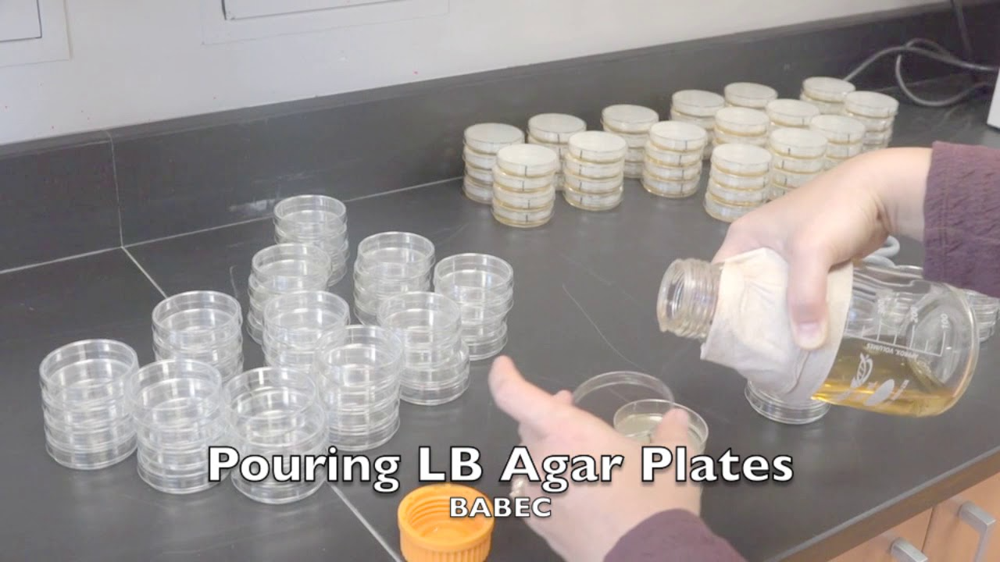

The rest of this is the bench work for the week, and it picks up where the fabrication lecture left off. You have DNA; now you have to get it into cells.
Section divider: Transformation and Plating.
Petri dish

This is what too many cells looks like. You want countable colonies, not a lawn, which is mostly a question of how much you plate.
A photograph of a petri dish carrying a dense lawn of colonies.
KCM heat-shock transformation
The timeline across the top is the one from the bench cheatsheet. Watch where the red mark is as much as what is happening underneath it: the plates go in first because they are the slow thing, the heat shock is ninety seconds inside thirteen minutes of waiting, and the rescue is a branch rather than a step.
KCM heat-shock transformation run step by step, with the bench cheatsheet's timeline across the top and the current step picked out on it in red.
Then leave it overnight
Plate, invert, 37 degrees, and that is the day. Nothing you can do now changes what comes up.
A picture of a crescent moon, standing for the overnight incubation.